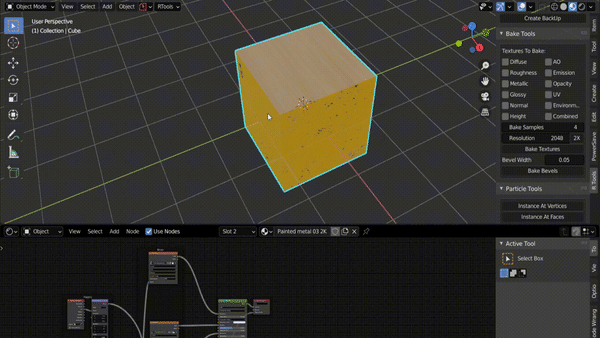

Texture Bake Tools¶
Bake Textures¶
Simplifies the process of baking textures to just one click. Select the objects you want to bake textures for, and select the type of textures you want to bake, and click Bake Textures. The selected textures are baked for all selected objects.

Set the resolution and render samples as per you requirements. The larger these values are, the longer it will take to bake. When exactly 2 objects are selected, the “Selected to Active” option will be visible. When enabled, the textures from the selected object will be baked to the active object. This works the same way as the Blender’s internal “Selected to Active” option.

Bake Bevels¶
Accessible from the N-Panel or by pressing ** ALT +O**. Set the bevel width and click Bake Bevels. The bevels will be baked and added to the materials. It will also find any empty normal sockets in the material node tree and add the bevel map. If you are not happy with the bevel width, simply re-bake and the bevels will automatically update. Make sure objects are uv unwrapped before baking bevels.

Holding down SHIFT (Smooth) or ALT (Worn) while clicking Bake Bevels will create an edge map that you can use to create some edge wear effects.

You can also hold down CTRL + (SHIFT or ALT) to bake a bevel map and an edge mask at the same time.
You can also save materials created with edge masks and append them to any new project and bake edges masks again to update the edge masks.